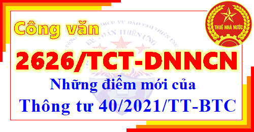

Ngày 19/7/2021 Tổng cục thuế ban hành Công văn 2626/TCT-DNNCN về việc giới thiệu một số điểm mới và triển khai thực hiện Thông tư 40/2021/TT-BTC ban hành ngày 19/7/2021.
Một số điểm mới được bổ sung trong Công văn 2626/TCT-DNNCN cụ thể như sau:
Điểm mới 1: Về đối tượng áp dụng.
Điểm mới 2: Về đối tượng áp dụng.
Điểm mới 3: Về giải thích từ ngữ.
Điểm mới 4: Về Phương pháp tính thuế đối với hộ kinh doanh, cá nhân kinh doanh nộp thuế theo phương pháp kê khai.
Điểm mới 5: Về Hồ sơ khai thuế đối với hộ kinh doanh, cá nhân kinh doanh nộp thuế theo phương pháp kê khai.
Điểm mới 6: Về nơi nộp, hạn nộp hồ sơ khai thuế, thời hạn nộp thuế.
Điểm mới 7: Về nghĩa vụ khai thuế đối với trường hợp hộ kinh doanh, cá nhân kinh doanh nộp thuế theo phương pháp kê khai tạm ngừng hoạt động, kinh doanh.
Điểm mới 8: Về đối tượng khai thuế theo từng lần phát sinh.
Điểm mới 9: Về nơi nộp hồ sơ khai thuế đối với cá nhân kinh doanh nộp thuế theo từng lần phát sinh.
Điểm mới 10: Về trách nhiệm lưu trữ hồ sơ chứng minh hàng hóa, dịch vụ hợp pháp trong trường hợp hộ khoán có đề nghị cấp lẻ, bán háo đơn lẻ theo từng laàn phát sinh.
Điểm mới 11: Về việc sử dụng hóa đơn của hộ khoán.
Điểm mới 12: Về hồ sơ khai thuế trong trường hợp hộ khoán sử dụng hóa đơn do cơ quan thuế cấp, bán lẻ theo từng lần phát sinh.
Điểm mới 13: Về thời hạn nộp hồ sơ khai thuế.
Điểm mới 14: Về điều chinh doanh thu và mức thuế khoán.
Điểm mới 15: Về việc công khai bảng công khai thông tin hộ khoán theo mẫu số 01/CKTT-CNKD.
Điểm mới 16: Về mức doanh thu từ 100 triệu đồng/năm trở xuống để xác định cá nhân cho thuê tài sản không phải nộp thuế trong năm.
Điểm mới 17: Về hạn nộp hồ sơ khai thuế đối với cá nhân cho thuê tài sản.
Điểm mới 18: Về nơi nộp hồ sơ khai thuế đối với cá nhân cư trú có tài sản cho thuê là bất động sản tại nước ngoài; và cá nhân cho thuê tài sản trừ bất động sản tại Việt Nam.
Điểm mới 19: Về hồ sơ khai thuế.
Điểm mới 20: Về tổ chức có trách nhiệm khai thuế thay, nộp thuế thay cho cá nhân.
Điểm mới 21: Về mức doanh thu từ 100 triều đồng/năm trở xuống để xác định đối tượng không phải nộp thuế trong trường hợp tổ chức khai thuế thay, nộp thuế thay cho cá nhân.
Điểm mới 22: Về kỳ khai thuế đối với tổ chức khai thuế thay, nộp thuế thay cho cá nhân cho thuê tài sản.
Điểm mới 23: Về hồ sơ khai thuế đối với tổ chức khai thuế thay, nộp thuế thay.
Điểm mới 24: Về trách nhiệm của Tổng cục Thuế
Điểm mới 25: Về trách nhiệm của Cục thuế
Điểm mới 26: Về tỷ lệ % tính thuế GTGT và thuế suất thuế TNCN áp dụng đối với hộ khoán nhận được các khoản: thưởng, hỗ trợ đạt doanh số, khuyến mại, chiết khấu thương mại, chiết khấu thanh toán, chi hỗ trợ bằng tiền hoặc không bằng tiền.
Điểm mới 27: Về việc bổ sung vào biểu thuế các nhóm ngành nghề, lĩnh vực không chịu thuế GTGT, không phải khai thuế GTGT, thuộc diện chịu thuế GTGT 0% theo pháp luật về thuế GTGT.
Điểm mới 28: Về việc bổ sung nhóm ngành dịch vụ, xây dựng không bao thầu nguyên vật liệu.
Điểm mới 29: Về việc bổ sung vào biểu thuế hoạt động hợp tác kinh doanh với tổ chức mà tổ chức có trách nhiệm khai thuế GTGT đối với toàn bộ doanh thu của hoạt động hợp tác kinh doanh theo quy định.
Điểm mới 30: Về việc bổ sung vào biểu thuế đối với các khoản bồi thường vi phạm hợp đồng, bồi thường khác.
-------------------------------------------------------------------------
